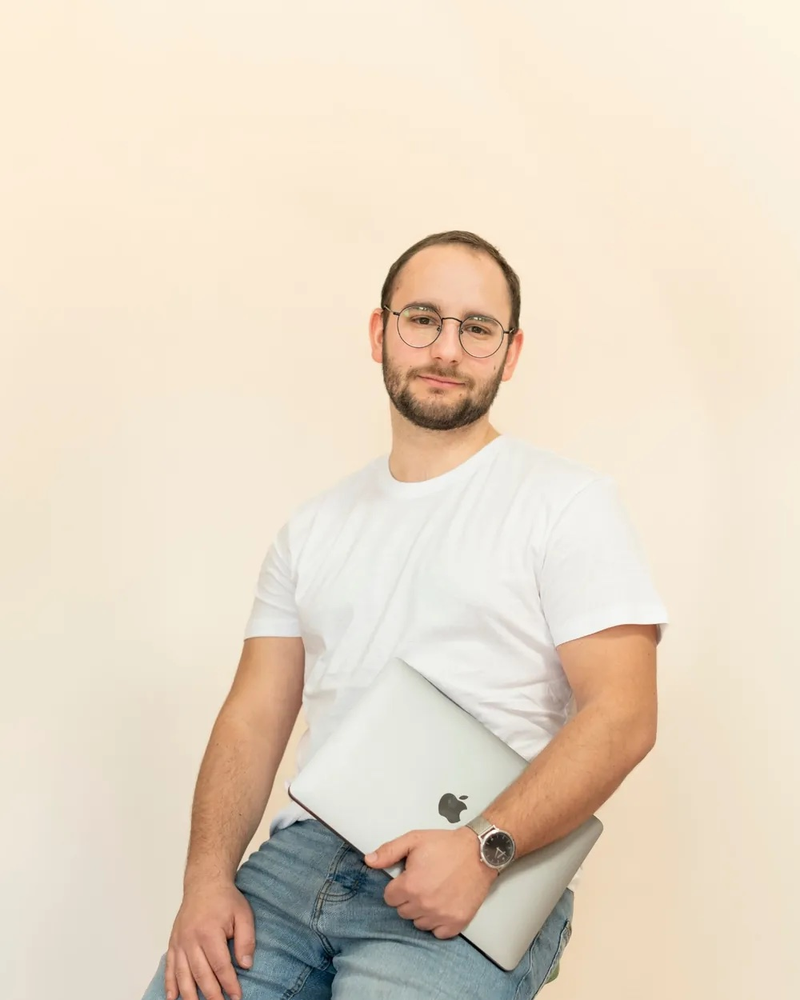

II. törvény · FlyX Tenerife

10 000 követő, 40 kedvelés. Az új korban minden poszt tiszta lappal indul: az számít, hányan nézik végig.
II. törvény · FlyX Tenerife

III. törvény

Hookok, kreatív irány, gyártás: a kampány motorja a kreatív. Ezt mi is elkészítjük, a koncepciótól a kész videóig.

Feed, Stories, Reels, TikTok, egységes stratégiával, egységes hanggal. Content calendar, community management, copywriting.

Meta, TikTok és Google kampányok, amik nem csak elköltik a büdzsét, hanem ROAS-t termelnek. Napi optimalizálás, A/B tesztelés, skálázás.

81×
ROAS, a legjobb eredményünk e-commerce kampányban

79M Ft
bevétel egy hét alatt, B2B Meta kampányból

105Ft
jelentkezőnként: ~5700 jelentkező 600K Ft költésből


Dániai tanulmányaim alatt szereztem meg az első ügyfelemet, aztán Meta Marketing Pro-ként közelről láttam, hogyan gondolkodnak a komoly márkák. 2022-ben alapítottam a SocialStreamet. Koppints egy körre, és ismerd meg a csapatot.
Nem dolgozunk mindenkivel. Pont ez a lényeg. Válaszd, ami közelebb áll hozzád:
Akkor beszélnünk kell. Havonta legfeljebb két új partner.
Akkor őszintén: nem mi vagyunk a jó választás.
Vélemények · 6